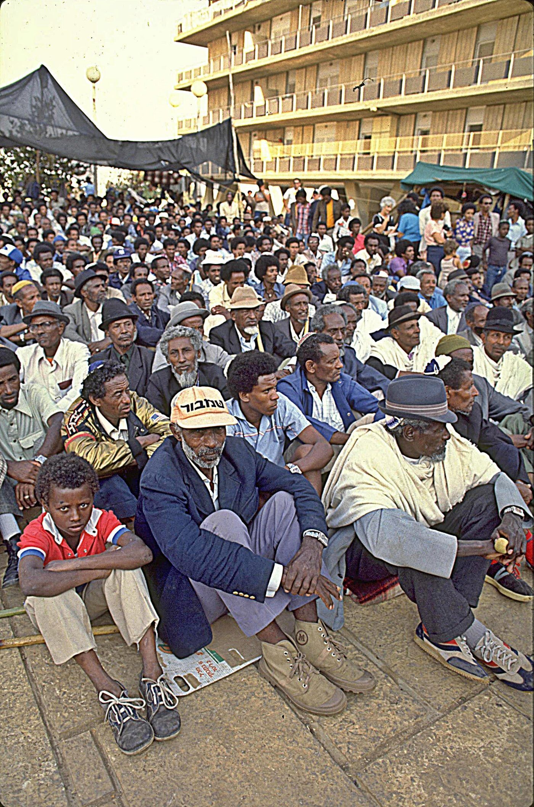

Warum das zur Ethnokratie gehört
Der Begriff Ethnokratie des israelischen Politikgeografen Oren Yiftachel beschreibt nicht nur die Hierarchie zwischen Jüdinnen und Juden und Palästinensern, sondern ausdrücklich auch die Hierarchie innerhalb der dominanten Gruppe — Yiftachel nennt sie die „Ethno-Klassen“: aschkenasisch (europäisch), mizrachisch (nahöstlich und nordafrikanisch), äthiopisch. Diese Seite ist damit kein Themensprung, sondern der zweite Teil desselben Befunds. Die Grundlagen dazu stehen auf der Gesetzes-Seite.
Erstens: exakte Begriffe. Bei den Depo-Provera-Spritzen handelt es sich um Langzeitverhütung, nicht um Sterilisation — der Vorgang wiegt schwer genug, aber mit dem falschen Wort wäre der ganze Abschnitt angreifbar. Zweitens: kein Fall ohne Ausgang. Zu jedem Vorgang gehört, was daraus wurde — Entschädigung, Entschuldigung, Freispruch oder gar nichts.
Zehn Vorgänge, 1949 bis 2024

„Seleqseya“ — die Auswahl der Einwanderer. Die Politik der selektiven Einwanderung gegenüber vor allem armen marokkanischen Juden, umgesetzt von Cadima, dem von Mossad LeAliyah Bet und der Jewish Agency getragenen Apparat. Auswanderungswillige wurden in Lagern medizinisch untersucht; Alter, Gesundheit und Arbeitsfähigkeit entschieden über die Zulassung — wer krank oder alt war, blieb zurück, teils wurden Familien getrennt.
Die Ringwurm-Bestrahlungen. Im Rahmen einer Gesundheitskampagne gegen Kopfpilz wurden schätzungsweise 20.000 bis 27.000 Kinder am Kopf mit Röntgenstrahlen behandelt — überwiegend Kinder aus dem Nahen Osten und Nordafrika. In den 1970er Jahren wurde erkannt, dass die Bestrahlung das Risiko für Tumoren im Kopf-Hals-Bereich deutlich erhöht.
Die verschwundenen Kinder. Über 1.000 Familien — überwiegend aus dem Jemen, dazu vom Balkan und aus Nordafrika — geben an, dass ihnen Säuglinge weggenommen wurden. Den Eltern wurde meist gesagt, das Kind sei gestorben; Leichname oder Gräber wurden häufig nie gezeigt.
Wadi Salib. Nachdem Polizisten in einem Café im Haifaer Viertel Wadi Salib auf den marokkanisch-jüdischen Einwanderer Yaakov Elkarif geschossen und ihn an den Beinen verletzt hatten, kam es zu tagelangen Protesten und Zusammenstößen — dem ersten großen innerjüdischen Sozialkonflikt Israels.
Die israelischen Black Panthers. Junge Mizrachim aus dem Jerusalemer Viertel Musrara gründeten eine Protestbewegung gegen die Benachteiligung bei Wohnraum, Bildung und Arbeit. Zur „Nacht der Panther“ am 18. Mai 1971 kamen 5.000 bis 7.000 Demonstrierende.
Die Blutspenden-Affäre. Zwölf Jahre lang verwarfen die Gesundheitsbehörden heimlich die Blutspenden äthiopischer Israelis — die Menschen durften spenden, ihr Blut wurde anschließend entsorgt. Öffentlich wurde das erst im Januar 1996 durch eine Zeitungsenthüllung.
Die Schultrennung von Immanuel. An einer staatlich finanzierten Mädchenschule wurden aschkenasische und sephardische Schülerinnen getrennt unterrichtet — auf Anordnung eines örtlichen Rabbiners.
Depo-Provera. Äthiopischen Einwanderinnen wurde die Langzeit-Verhütungsspritze verabreicht — ohne ausreichende Aufklärung, teils unter Druck, mit dem Ergebnis eines starken Geburtenrückgangs in dieser Gruppe.
Damas Pakada. Videoaufnahmen zeigten, wie der 19-jährige äthiopisch-israelische Soldat in Uniform von einem Polizisten und einem Polizeifreiwilligen ohne erkennbaren Anlass geschlagen wurde.
Solomon Teka. Der 18-jährige äthiopische Israeli wurde von einem Polizisten außer Dienst erschossen. Die Tötung löste landesweite Proteste aus.
Die Vorgänge im Einzelnen – mit Ausgang
Diese Seite dokumentiert überwiegend Vorgänge, die ohne Folgen blieben. Einer ging anders aus — und er gehört deshalb dazu.
Im August 2019 zogen drei Organisationen vor den Obersten Gerichtshof: Tebeka (Rechtshilfe für äthiopische Israelis), die Vereinigung für Bürgerrechte in Israel und die Vereinigung äthiopischer Juden. Ihr Antrag richtete sich gegen eine alltägliche Praxis: dass die Polizei Menschen auf der Straße anhält und zur Vorlage des Ausweises auffordert, ohne dass ein konkreter Verdacht besteht.
Weiterlesen (3 Absätze)
Der Ausgang. Am 25. Januar 2021 gab das Gericht dem Antrag statt. Alle drei Richter — Gerichtspräsidentin Esther Hayut, Vizepräsident Neal Hendel und Alex Stein — beanstandeten die bestehende Praxis. Seither darf die Polizei die Vorlage eines Ausweises nur bei begründetem Verdacht verlangen.
Die Zahlen, um die es ging: Nach Auswertungen der Polizei selbst wurden gegen äthiopisch-israelische Minderjährige fast viermal so häufig Ermittlungsakten eröffnet wie im Bevölkerungsdurchschnitt, bei Erwachsenen doppelt so häufig. Nur 13 Prozent der Gemeinschaft gaben an, der Polizei zu vertrauen.
Warum das hier steht: Es zeigt, dass die Vorgänge auf dieser Seite kein Naturgesetz sind. Wo Betroffene sich organisieren und den Rechtsweg gehen, lässt sich eine Praxis auch beenden — in diesem Fall nach anderthalb Jahren Verfahren.
Was die zehn Vorgänge zusammen zeigen
| Vorgang | Zeitraum | Betroffene Gruppe | Staatliche Reaktion |
|---|---|---|---|
| Seleqseya | ab 1951 | marokkanische, tunesische Juden | historisch aufgearbeitet, keine Entschädigung |
| Ringwurm-Bestrahlungen | 1949–1960 | überwiegend mizrachische Kinder | Entschädigungsgesetz 1994 |
| Verschwundene Kinder | 1950er | jemenitische, mizrachische, Balkan-Familien | Anerkennung und Entschädigung 2021, keine Entschuldigung |
| Wadi Salib | 1959 | marokkanische Einwanderer | Etzioni-Kommission bestätigt die Diskriminierung |
| Black Panthers | 1971 | Mizrachim | „Sie sind nicht nett“ – später politische Folgen |
| Blutspenden-Affäre | 1984–1996 | äthiopische Israelis | Entschuldigung von Peres, Navon-Kommission |
| Schultrennung Immanuel | 2007–2010 | sephardische Mädchen | Oberster Gerichtshof untersagt sie, Väter inhaftiert |
| Depo-Provera | bis 2013 | äthiopische Einwanderinnen | Stopp-Anordnung 2013 |
| Damas Pakada | 2015 | äthiopischer Soldat | Absprache statt Anklage |
| Solomon Teka | 2019 / 2024 | äthiopischer Jugendlicher | Freispruch, Berufung läuft |
Es zieht sich vom Gründungsjahrzehnt bis in die Gegenwart und betrifft Medizin, Bildung, Fortpflanzung, Polizei und Justiz. Bei den älteren Vorgängen hat der Staat einen Teil selbst eingeräumt — Gesetze, Kommissionen, Entschädigungen. Bei den jüngsten Fällen endet es dagegen genauso wie bei den Verfahren gegen Soldaten und Siedler auf der Seite Siedlergewalt & Straflosigkeit: mit einer Absprache oder einem Freispruch.
Wer sich damit beschäftigt, findet die Organisationen, die genau daran arbeiten, auf der Seite Organisationen & Datenbanken — darunter Tebeka (Rechtshilfe für äthiopische Israelis), das Racism Crisis Center, Tag Meir und Amram, die Organisation der betroffenen Familien.
Quellen dieser Seite
Alle Quellen dieser Seite anzeigen (20 Einträge)
Stand: 16. November 2026 (geprüft; die Seite behandelt abgeschlossene Vorgänge ohne laufende Zahlen).
Gründungsjahrzehnte
- Canadian Bulletin of Medical History – Medical Selection and the Debate over Mass Immigration in the New State of Israel (peer-reviewed)
- PubMed – Conflicts of quarantine: the case of Jewish immigrants to the Jewish state
- Oxford University Press – Ringworm and Irradiation: Healing the children and the nation
- Harefuah – The Truth About the Ringworm Affair (kritische Einordnung)
- Times of Israel – Regierung erkennt die Kinder-Affäre an und entschädigt (2021)
- Amram – Zeugnisse der betroffenen Familien
Wadi Salib und Black Panthers
- Cambridge / IJMES – The Children of Wadi Salib and the 1959 Moroccan Jewish Protest in Haifa (PDF)
- Studies in Ethnicity and Nationalism – Frames of the Wadi Salib Events in the Israeli Press
- BlackPast – Israeli Black Panther Party (1971–1977)
- Center for Israel Education – Treffen der Black Panthers mit Golda Meir
- +972 Magazine – Wer erntet die Früchte des Kampfes der Black Panthers?
Blut, Schule, Verhütung, Polizei
- Culture, Medicine and Psychiatry – „One People, One Blood“: Public Health, Political Violence and HIV
- The Lancet – Israel's ban on use of Ethiopians' blood
- Center for Israel Education – Proteste gegen das Entsorgen der Blutspenden
- Haaretz – Israel räumt die Verhütungsspritzen ein (27.1.2013)
- JTA – Gesundheitsministerium ordnet den Stopp an
- Times of Israel – Der gefilmte Polizist wird entlassen (Pakada)
- Jerusalem Post – Oberster Gerichtshof bestätigt die Absprache
- Times of Israel – Freispruch im Fall Solomon Teka
- Jerusalem Post – Berufung gegen den Freispruch
Bildnachweise dieser Seite: Titelbild – Foto: Urheber unbekannt, 1951 (UNRWA-Archiv/PalQuest) – Public Domain, via Wikimedia Commons · Quelle